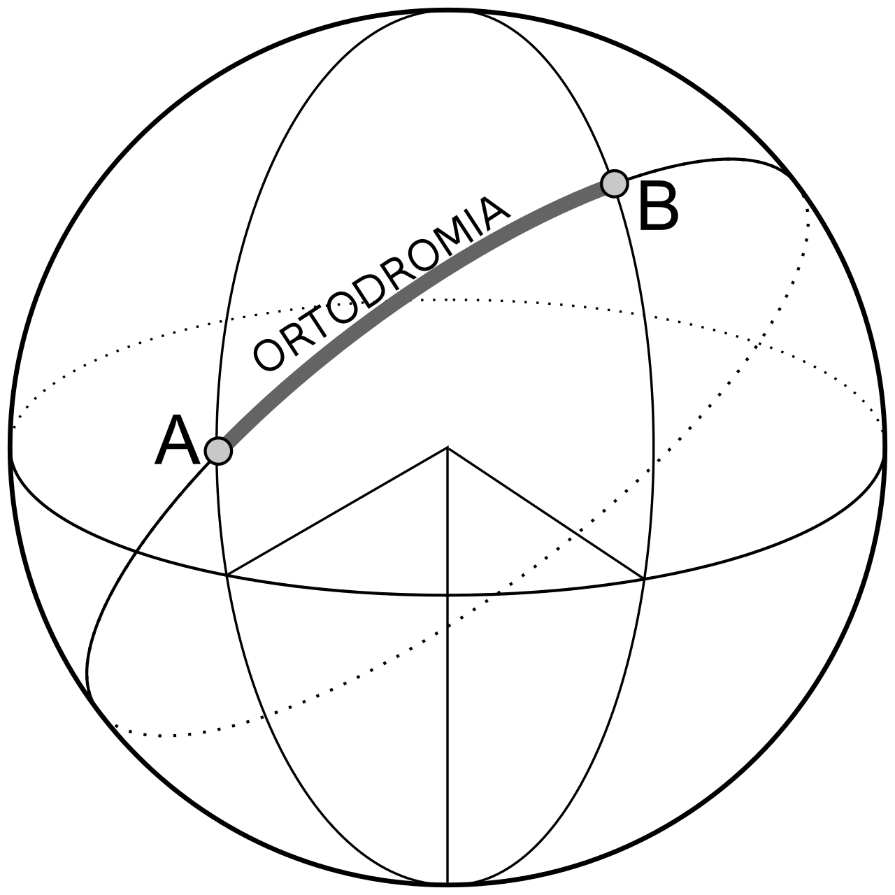

ORTODROMIA E LOSSODROMIA¶
Due circoli massimi ( massima circonferenza ) uno orientato per longitudine sull’equatore e uno orientato per latitudine sul meridiano di greenwich e l’altro sull’antimeridiano
L’ORTODROMIA:¶
Basterà prendere un circolo massimo a scelta, rappresentato da un meridiano e il suo antimeridiano oppure dall’equatore, e bisogna inclinarlo per farlo passare per i due punti. l’ortodromia, è la linea più breve che permette di congiungere due punti su una sfera,
ed è costituita da una porzione di circonferenza massima, ottenibile intersecando la superficie della sfera con un piano passante per il centro. Se consideriamo la Terra di forma sferica, si può dire che un velivolo o un’imbarcazione naviga per ortodromia quando, nell’andare da un punto a un altro della superficie terrestre, percorre l’arco di circonferenza con distanza minima che gli congiunge. Infatti è noto che l’ortodromia rappresenta la più breve distanza che separa due punti sulla superficie terrestre e, di conseguenza, per un velivolo o una nave è più rapido seguire tale percorso. Essa ha la caratteristica di tagliare tutti i meridiani con angoli diversi, lungo un cerchio massimo, a differenza della lossodromia, che invece taglia tutti i meridiani con lo stesso angolo, ma rispetto alla quale vi è un sensibile risparmio di percorso, in particolare sulle lunghe distanze. Casi particolari sono gli archi di meridiano. È da notare che anche gli archi del parallelo equatoriale rappresentano casi particolari di ortodromia in quanto, anche non variando l’angolo di intersezione con i meridiani, la distanza tra i punti considerati (partenza ed arrivo) è la minima possibile. Poiché nel caso della navigazione (aerea o marittima) è conveniente, in generale (a meno di altre variabili quali correnti marine, venti in quota, ecc.), percorrere il tragitto più breve per collegare due punti, la rotta ortodromica è quella preferenziale. Una rotta di questo tipo è però soltanto ideale, in quanto non è pensabile che il mezzo in questione possa variare in modo continuo la direzione di navigazione (intesa come orientamento rispetto ai punti cardinali). La rotta reale è molto spesso una buona approssimazione della rotta ortodromica, realizzata tramite successive rotte lossodromiche parziali (spezzata).
Vertice: è il punto dell’ortodromia a maggiore latitudine; esistono due vertici per ogni ortodromia (che è un circolo massimo sulla sfera terrestre) uno all’antipode dell’altro.
Nodi: punti in cui l’ortodromia interseca l’equatore, che è anch’esso un circolo massimo sulla sfera terrestre.
Tutti e quattro questi elementi sono separati tra loro da una differenza di longitudine di 90°
LOSSODROMIA¶
La lossodromia è una curva sulla terra che taglia i meridiani secondo lo stesso angolo, collegando due punti. Come possiamo vedere dall’immagine si sono formati degli angoli, che sono anche stati segnati, essi sono costanti tra di loro.

Quando si pensa e si parla di lossodromia è importante non pensare che seguendo una qualsiasi direzione dell’orizzonte (che non sia per meridiano o per equatore) si ritorni, dopo aver fatto il giro della terra, al punto di partenza. La lossodromia è tracciata su di una superficie sferica, la terra, perciò è una spirala detta ( spirale di Archimede ), la quale dovendo essere costante Molto importante è tenere a mente che la distanza lossodromica non è il cammino più breve tra due punti sulla superficie terrestre, perché infatti esso è la distanza ortodromica. La distanza ortodromica, sebbene sia minore di qualunque altra distanza che unisca i due luoghi considerati, non è quella che si chiama distanza nautica. La distanza ortodromica, anche se minore di qualunque altra distanza che unisca i due punti considerati sulla superficie del globo terrestre non è quella che si chiama distanza nautica. La distanza nautica infatti è l’arco di lossodromia il quale, ovviamente è più lungo dell’arco di ortodromia, però offre un vantaggio ovvero la possibilità di poter essere costantemente seguito alla bussola, cioè di mantenere sempre il medesimo orientamento. La lossodromia e ortodromia sono due tecniche fondamentali nella nautica. Infatti per potersi muovere per vie acque con un angolo costante tra due punti, bisognerà adottare una rotta lossodromica, in quanto è anche seguibile tramite bussola. Ma ecco la particolarità della rotta lossodromica, un’imbarcazione che segue questo tipo di rotta segue una traiettoria che ha la particolarità di essere una spirale a doppia curvatura che, prolungata all’infinito, tende ad avvolgersi attorno al polo senza mai raggiungerlo.